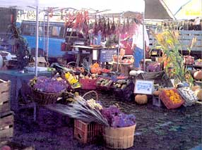

Like anything else, there will always be a few nuts among the berries. I'm talking about the commercial produce that you may encounter at your farmers' market that you suspect didn't come from a small, local farm. (I once attended a market selling bananas. Now really, how dumb do I look?) My neighborhood farmers' market, as well as the Chicago farmers' markets, try to prevent this from occurring by requiring farmers to sign a contract stating that they grow their own produce and flowers locally. But this doesn't weed out all commercial farmers because many do grow their own produce, even if it is hydroponic (grown in water instead of dirt). The Madison, Wisconsin, market manager solves this problem with constant surveillance by her "produce police," who make surprise visits to any suspect farms. Unless you want to buy supermarket produce at higher, farmers' market prices, you'll need a few tips on how to spot a real farmer. No, he or she is not necessarily the one in the overalls.
Check out the stand: Look for smaller stands that sell a modest selection of seasonal produce, avoiding the larger stands with supermarket selections. A real farmer will usually be working his stand with a few relatives and employees, whereas the larger stand employs a huge staff. Real farmers usually drive ordinary trucks; fake farmers drive moving vans. Real farmers pack their produce in crates or bins instead of hundreds of boxes labeled "tomatoes."
Check out the produce: Real farmers only sell seasonal produce. If you find tomatoes in Illinois during the first week of June, you know that they're either hydroponic (look for the sticker) or were shipped in from a southern state. Also, beware perfect produce. That's right. We don't want perfectly shaped commercial peppers; we want produce with character (ever seen Siamese-twin cucumbers?). If a bug crawls out of your spinach, don't run screaming from the market, but instead be thankful that your greens are so fresh and alive. Just wash them well before you eat them.
Talk to the farmers: This is the only time that you, the consumer, will come in direct contact with the growers. Ask where they're from and how many acres they farm. Real farmers are usually happy to answer your questions about, for example, how to select a ripe melon or whether they spray their produce.
|
 |
|
|